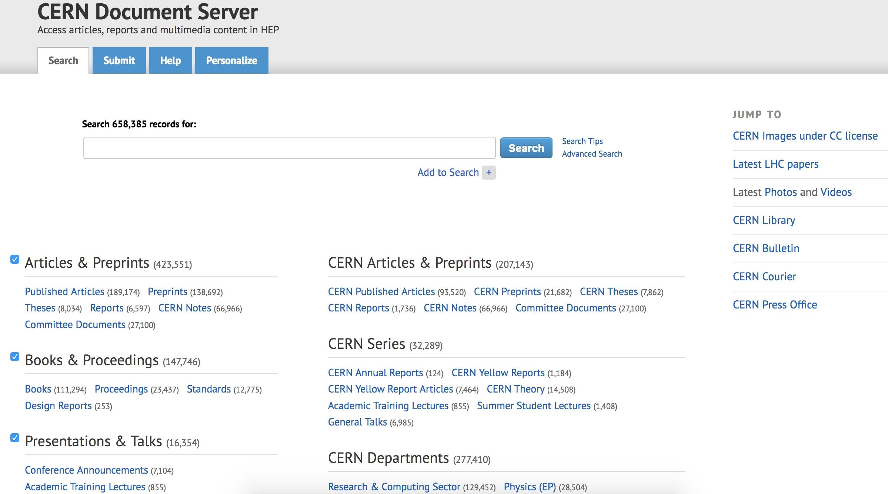
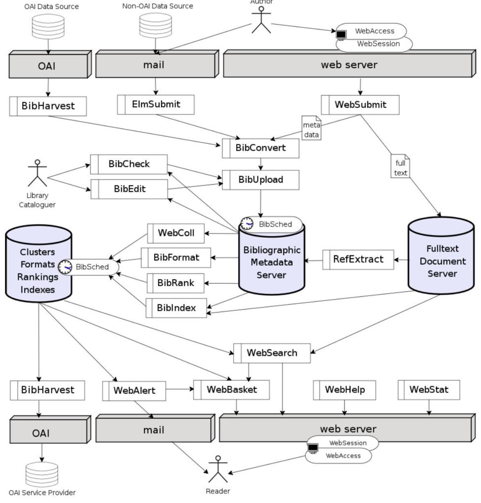

Preambul
Acest articol pune la dispoziție un interviu cu Ioan Ungurean, student la Masterul de Ingineria Sistemelor Software din cadrul Facultății de Informatică a Universității “Alexandru Ioan Cuza” din Iași, care în prezent efectuează un stagiu de pregătire de tip Technical Student în Geneva, la CERN – binecunoscuta organizație europeană pentru cercetări în domeniul nuclear și locul de naștere a spațiului World-Wide Web. De asemenea, oferim o serie de informații referitoare la arhitectura software a platformei CERN Document Server la care contribuie și Ioan.
O experiență anterioară cu mediul științific oferit de CERN a avut-o și masteranda Oriana Oniciuc, pe parcursul verii anului 2017, în cadrul Summer Student Programme.
Programul de stagiatură Technical Student este destinat absolvenților de facultăți cu profil informatic, ingineresc sau științe aplicate și poate dura între 4 și 12 luni. Mai sunt oferite, de asemenea, stagii de pregătire doctorală (Doctoral Student Programme), acestea putând avea o durată de 6–36 de luni. Pentru mai multe detalii, se poate vizita situl CERN dedicat oportunităților pentru studenți: http://careers.cern/students.
Interviul: “Ideile noi cu potențial sunt încurajate”
Cum ai aflat de existența acestei oportunități?
Urmând cursul “Dezvoltarea aplicațiilor Web” de la master, am observat pe situl acestei discipline disponibilitatea unui astfel de stagiu. Am citit pe situl CERN indicat că este nevoie de o referință din partea unui profesor de la facultatea la care studiezi, pe lângă alte câteva documente tot de la facultate. M-am consultat și cu colega mea Oriana, am trimis documentele solicitate și… am aflat apoi că am fost acceptat.
Când ai demarat acest stagiu?
Pe 1 februarie 2018 am început stagiul la CERN, cu statutul de Technical Student. Durata acestui stagiu este de un an, dar prezenta mea va fi de 6 luni. Fac parte din departamentul IT, grupul CDA (Collaboration, Devices and Applications), secția dedicată depozitelor digitale – DR (Digital Repositories), cunoscut ca IT-CDA-DR.
Ce proiecte se află actualmente în dezvoltare în cadrul secției în care ai fost încadrat?
În cadrul acestei secții sunt dezvoltate 8 proiecte, ale căror echipe au un număr variabil de dezvoltatori. Aceste proiecte sunt:
- Invenio – http://inveniosoftware.org/
- Zenodo – http://zenodo.org/
- The CERN Document Server – http://cds.cern.ch/

- The Digital Memory Project (e.g., arhive IT) – proiect intern
- CERN Open Data Portal – http://opendata.cern.ch/
- CERN Analysis Preservation – http://analysispreservation.cern.ch/welcome
- REANA (Reusable Analyses) – http://github.com/reanahub/reana/
- B2SHARE (un proiect H2020 referitor la stocarea și partajarea datelor obținute în urma cercetării științifice – EU H2020 project EUDAT) – http://b2share.eudat.eu/
La ce proiect ești implicat?
Proiectul la care lucrez eu este CERN Document Server – CDS. Acest proiect fiind vechi și implementat, de asemenea, cu tehnologii învechite, s-a luat decizia de a fi împărțit în patru subproiecte, oferind un portal Web unde pot fi regăsite fișiere video, cărți electronice, fotografii, articole, publicații etc. Tot ceea ce este produs în format electronic, enumerat mai sus, este salvat și se poate găsi pe platforma CDS. Până la acest moment a fost demarată implementarea subproiectului CDS Videos la care lucrez și eu. În paralel, am început să lucrăm de asemenea la CDS Books, ce va fi practic biblioteca online a CERN-ului. După lungi sesiuni de planificare, am descoperit că vor exista use-case-uri destul de complexe, contrar cu ceea ce am crezut anterior.

Acomodarea cu noul mediu de lucru a avut loc ușor?
Pentru a determina care ar fi cel mai potrivit cadru de lucru (framework), dar și cel mai ușor de învățat într-un timp relativ scurt pentru noii veniți, a avut loc un hackathon de o zi în care 8 echipe au implementat o mini-aplicație cu diferite tehnologii/framework-uri ca React, Angular, Vue, Web Components etc. Încă nu s-a luat o decizie definitivă asupra framework-ului pe care îl vom folosi, dar balanța înclină spre React și Vue.js.
Ce poți relata referitor la tehnologiile și limbajele de programare adoptate la CERN?
Tehnologiile cu care lucrez sunt următoarele:
- pe partea de client Web (frontend): AngularJS, JavaScript, CSS și HTML;
- la nivel de server (backend): Python;
- instrumente de exploatare (deployment) și administrare: Docker, Puppet, Celery, plus scripting la nivel de shell.
Ceea ce îmi place foarte mult este faptul că ideile noi cu potențial sunt încurajate și evidențiate. Dacă ai idei noi pe care ai vrea să le și pui în practică, discuți cu supervizorul tău și poți lucra la ele în timpul programului, iar la final va trebui să le prezinți la DevForum.
Ce reprezintă acest DevForum?
În fiecare săptămână, luni, se ține o prezentare de o oră la nivel de secție (în cazul meu, Digital Repositories – DR) în care cineva vine și își expune ideile noi implementate.
Ce metodologii sunt folosite și care este programul de lucru?
Lucrăm agile cu sprint-uri de două săptămâni și stand-up-uri dimineața odată la două zile. Programul de lucru este de 8 ore. Membrii echipei au naționalități diferite și toți sunt dispuși să te ajute în orice împrejurare. Sunt tratat ca o parte egală a echipei, și am parte de tot sprijinul și îndrumarea de care am nevoie. Simt că munca mea este apreciată și asta mă bucură foarte mult.
De menționat ar fi faptul că tot ce am lucrat până acum este open source și nu am întâlnit nimic care să fie protejat de un NDA (Non Disclosure Agreement) sau ceva asemănător.
Mult succes în continuare la CERN!
Arhitectura platformei CERN Document Server
În cadrul acestei secțiuni, vom pune la dispoziție o suită de amănunte de interes privind arhitectura software a sistemului CERN Document Server (CDS) menționat anterior.
Scopul platformei CDS este, în principal, cel de gestionare a unui volum deosebit de informații (documente) disponibile în formă electronică: rapoarte tehnice CERN, cărți, teze, lucrări științifice și prezentări la conferințe, inclusiv materiale multimedia: fotografii, filme ale unor prelegeri academice/tehnice etc. – astfel, CDS poate fi considerat o soluția viabilă de implementare a unei biblioteci digitale (digital library). Pentru detalii, a se consulta lucrarea (Vesey et al., 2002).
Arhitectura originară a sistemului – conceput în 2000 – recurge la tehnologii deschise, open source (Sitas, 2006):
- Sistem de operare: Linux;
- Limbaje de programare folosite: PHP și Python;
- Sistem de baze de date: MySQL;
- Server Web: Apache HTTP Server;
După cum se poate remarca, s-a adoptat populara paradigmă LAMP (Linux, Apache, MySQL, PHP/Python) de proiectare, dezvoltare și exploatare practică a aplicațiilor Web.
Principalele componente sunt figurate în diagrama de mai jos care prezintă și fluxul de date (documente + meta-datele aferente):

Pentru managementul conținutului arhivat ce poate fi accesat liber (open access), s-a adoptat OAI-PMH (Open Access Initiative–Protocol for Metadata Harvesting), un protocol ce recurge la tehnologii XML (Extensible Markup Language) pentru interconectarea colecțiilor de date pe baza meta-datelor asociate.
În vederea specificării și stocării meta-datelor, se utilizează standarde binecunoscute precum Dublin Core Metadata Initiative – DCMI (Weibel & Koch, 2000) și MARC 21. Informații de interes referitoare la prelucrarea meta-datelor sunt oferite de Pepe et al. (2006).
Maniera de indexare și de stabilire a relevanței resurselor căutate (ranking) este implementată de un modul intern creat în cadrul CERN.
Încheiere
În loc de concluzii, amintim faptul că studenții au la dispoziție și alte oportunități de efectuare a unor stagii de pregătire practică.
Inițiativa majoră, deja de succes de mulți ani, este Stagii pe Bune, la care Facultatea de Informatică este partener de mai bine de un deceniu. O alternativă este reprezentată de programul de stagii internaționale de practică oferit de Erasmus+ disponibil în universitate.
Referințe bibliografice
- Buraga, S., Dezvoltarea aplicațiilor Web (Web Application Development), Facultatea de Informatică, Universitatea “Alexandru Ioan Cuza” din Iasi, Romania, 2018: http://profs.info.uaic.ro/~busaco/teach/courses/wade/
- Pepe, A. et al., “CERN Document Server Software: the integrated digital library”, CERN Technical Report 2005-018, 2006: http://cds.cern.ch/record/853565/files/open-2005-018.pdf
- Sitas, A., “CDSware (CERN Document Server Software)”, Library Hi Tech, Vol. 24, No. 3, 2006.
- Vesey, M., Baron, T., Le Meur, J., Simko, T., “Creating Open Digital Library Using XML: Implementation of OAi-PMH Protocol at CERN”, International Conference on Electronic Publishing – ELPUB, 2002.
- Weibel, S. L., Koch, T., “The Dublin Core Metadata Initiative”. D-lib Magazine, 6 (12), 2000.
- * * *, Dublin Core Metadata Initiative, 2018: http://dublincore.org/
- * * *, MARC Standards, 2018: http://www.loc.gov/marc/
- * * *, Student Opportunities, CERN, Geneva, Elveția, 2018: http://careers.cern/students
- * * *, Stagii de practică Erasmus+, Universitatea “Alexandru Ioan Cuza” din Iasi, Romania, 2018: http://www.uaic.ro/international/programul-erasmus/studenti/mobilitati-de-practica-erasmus/
- * * *, Stagii pe Bune, Romania, 2018: http://stagiipebune.ro/
- * * *, Stagii pe Bune la Facultatea de Informatică, Universitatea “Alexandru Ioan Cuza” din Iasi, Romania, 2018: http://profs.info.uaic.ro/~stagiidepractica/